EBDP
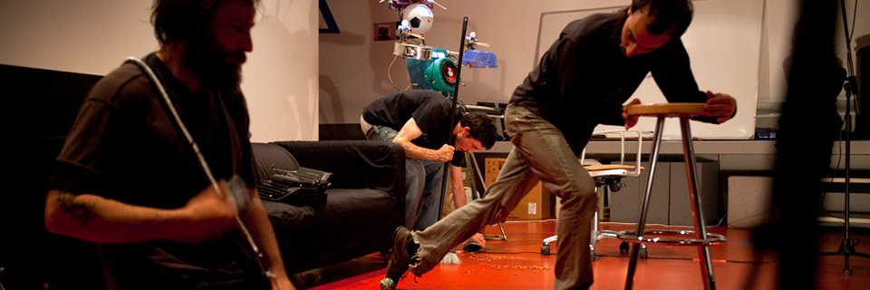
En Busca Del Pasto (EBDP) was born in 2003 as a project of strict musical improvisation and sound research, which has increasingly emphasized the scenic and performative dimension of music as "real time" and as a collective phenomenon. Today EBDP has more than 50 albums published on the Internet under copy left licenses, but still the most important thing is in the live ones, in which we should not only ask ourselves "What is it that sounds?", but also "What is happening here?".
EBDP not only works with music, but also with scenography, poses, the possibilities of live experimentation, expectation or public participation..., playing with the conditions in which improvisation will take place every time. Nothing is superfluous! And this is the fundamental thing: being a strictly improvised event, nobody knows what will happen there in the end.
LOGBOOK

2022
· Nov/22 · GRASS BETWEEN COBBLESTONES - Semi-finalist at the en el Prague Underground FIlm Fest.
· Nov/22 · GRASS BETWEEN COBBLESTONES - Official Selection at the XVIII Festival Transterritorial de Cine Underground (Buenos Aires).
· Sep/22 · Performance by Jorge Ruiz Abánades at the European Improvisation Meeting - Dance and Music (Nice)
· Sep/22 · GRASS BETWEEN COBBLESTONES - Projection at the European Improvisation Meeting - Dance and Music (Nice)
· Sep/22 · GRASS BETWEEN COBBLESTONES - Semi-finalist at the en el Kansas Arthouse Music and Film Festival.
· May/22 · GRASS BETWEEN COBBLESTONES - Nominated for Best Documentary at the Portland New Alternative Voices.
· May/22 · GRASS BETWEEN COBBLESTONES - Semi-finalist at the en el New Filmmakers New Orleans.
· Mar/22 · GRASS BETWEEN COBBLESTONES - Official Selection at the International World Film Awards (New York).
· Feb/22 · GRASS BETWEEN COBBLESTONES - Official Selection at the International Documentary Film Awards (Amsterdam).
· Jan/22 · GRASS BETWEEN COBBLESTONES - Official Selection at the Best Documentary Award (London).
2021
· Nov/21 · GRASS BETWEEN COBBLESTONES - Nominated for Best Documentary at the Rome Independent Prisma Awards
· Nov/21 · GRASS BETWEEN COBBLESTONES - Semi-finalist at the Toronto Independent Festival of CIFT
2019-2021
· Planning, shooting and production of the documentary film GRASS BETWEEN COBBLESTONES.
2019
· Oct/27 · PERIFERIAS 20.0 Festival. CC Manuel Benito Moliner (Huesca).
· Sep/28 · ZARATA Fest 2019. Círculo de Bellas Artes (Madrid).
2018
· Jun/16 · 15th Anniversary of EBDP. Observatorio Musical (Madrid).
2017
· Apr/22 · RARAS MÚSICAS Festival #2017. Nadir Gallery (Madrid).
2016
· Jun/04 · 1st Marathon RARAS MÚSICAS. Lanau - Minima Espacio Escénico (Madrid).
2015
· Oct/18 · RARAS MÚSICAS #047. La Puerta Estrecha Theater (Madrid).
· May/02 · Workshop on musical and scenic improvisation. Quinta del Sordo Creative Center (Madrid).
· Jan/21 · Le Plan B (Poitiers, Francia).
2014
· Oct/18 · RARAS MÚSICAS #030. Espacio en Blanco (Madrid).
· Sep/25 · Meeting of Improvisers. Taberna Alabanda (Madrid).
· May/10 · I Festival Castizo Underground. La Casa de los Jacintos (Madrid).
· Mar/12 · Taberna Alabanda (Madrid).
. Jan/31 · INTACT Project Presentation. Liu-Multiple/Space Mendés-France Planetarium (Poitiers).
· Jan/22 · POLIZONE Presentation (INTACT Project). MediaLab-Prado (Madrid).
2013
· Nov/14 · With Zan Hoffman. Taberna Alabanda (Madrid).
· Oct/27 · Taberna Alabanda (Madrid).
· Sep/29 · Meeting of Improvisers. Taberna Alabanda (Madrid).
· Jul/18 · OVERFLOW Presentation (INTACT Project). MediaLab-Prado (Madrid).
· Feb/09 · Tribute to José Val del Omar. El Círculo Hall (Cuenca).
· Jan/12 · ALINA Concerts. With Trío Antimanierista. Taberna Alabanda (Madrid).
2012
· Jun/01 · UNFORESEEN MUSIC CYCLE #6. Taberna Alabanda (Madrid).
· May/04 · UNFORESEEN MUSIC CYCLE #5. La Tirana Malas Artes (Madrid).
· Mar/02 · UNFORESEEN MUSIC CYCLE #4.2. With The Rebel Octopus. El Caldero de Cobre (Madrid).
· Mar/01 · UNFORESEEN MUSIC CYCLE #4.1. Taberna Alabanda (Madrid).
· Feb/03 · UNFORESEEN MUSIC CYCLE #3.2. Taberna Alabanda (Madrid).
· Feb/02 · UNFORESEEN MUSIC CYCLE #3.1. Taberna Alabanda (Madrid).
2011
· Dec/02 · UNFORESEEN MUSIC CYCLE #2.2. La Tirana Malas Artes (Madrid).
· Nov/04 · UNFORESEEN MUSIC CYCLE #1.2. Taberna Alabanda (Madrid).
· Nov/03 · UNFORESEEN MUSIC CYCLE #1.1. La Faena II (Madrid).
· May/12 · Conciertos Mínimos. Studio Banana (Madrid).
· Apr/05 · "No Works Pop Machine". Los Martes Experimentales (Priovra Collective). Pepa Trencha Hall (Madrid).
· Mar/04 · REC-Madrid Festival. Siroco Hall (Madrid).
2010
· Dec/11 · Tribute to Andréi Tarkovsky. Magatzems Wall&Video Hall (Valencia).
· May/30 · "Pasto al despiece". ARTe SONoro OFF (InSonora+Casa Encendida). Aula 11 (Madrid).
· Apr/17 · AvLab - Sound It Yourself. MediaLab-Prado (Madrid).
· Jan/16 · With NanTx. La Casa de los Jacintos (Madrid).
2009
· Nov/11 · Magatzems Wall&Video Hall (Valencia).
· Nov/05 · “Microvoyages” Presentation (Esther Ruiz). Galicia Auditorium (Santiago de Compostela).
· Nov/01 · With Zan Hoffman and Minuit de Lacroix. La Casa de los Jacintos (Madrid).
· Apr/25 · Confusion Group Presentation. Dance School in Calderón Theater (Madrid).
2008
· Nov/30 · Draining Beats on the Brain Netlabel Presentation . Básico Hall (Madrid).
· Nov/29 · With Zan Hoffman. La Casa de los Jacintos (Madrid).
· Nov/28 · ULTERIOR Festival. 14-30 Espacio Joven (Madrid).
· Nov/20 · NetLeft Label Vol. I. Plataforma Intersónica (Madrid).
· Sep/14 · InSonora IV. Instituto Europeo de Diseño (Madrid).
· Jun/13 · SALAMI Presentation. Arte 10 Arts School (Madrid).
· Apr/28 · Spontaneous Expression Workshop. XLIV Congreso de Jóvenes Filósofos. Universidad de Granada.
· Mar/01 · ATENEO ABIERTO Cycle. Ateneo de Madrid Auditorium (Madrid).
2007
· Oct/26 · "Pasto al desnudo". La Casa de los Jacintos (Madrid).
· Jul/07 · MIRADOR 07 Festival. Matadero-Madrid/Intermediae (Madrid).
· Jun/29 · Casa de los Jacintos (Madrid).
· Jun/21 · La Palma Café (Madrid).
· Jun/08 · Arteria Gráfica (Madrid).
· May/25 · I Concurso Audiovisual de La Casa de los Jacintos. La Casa de los Jacintos (Madrid).
· May/22 · "Restrospectiva II". Paraninfo Facultad Filosofia UCM (Madrid).
· May/18 · International Museum Day. Biblioteca Nacional (Madrid).
· Apr/27 · "Oraciones". La Casa de los Jacintos (Madrid).
· Apr/13 · "Anatomía de la intimidad". XLIV Congreso de Jóvenes Filósofos. La escalera de Jacob (Madrid).
· Apr/06 · CUE-Berlin. Weissenseer Freitag (Berlín).
· Mar/30 · "Retrospectiva I". La Casa de los Jacintos (Madrid).
· Feb/23 · "Silencios II: Cielo, mar, playa". La Casa de los Jacintos (Madrid).
· Jan/26 · "Digresiones IV: Variaciones de un diaporama". La Casa de los Jacintos (Madrid).
· Jan/13 · "Este lugar". AvLab. MediaLab-Conde Duque (Madrid).
2006
· Dec/29 · "Silencios I: Habitación vacía". La Casa de los Jacintos (Madrid).
· Nov/24 · La Casa de los Jacintos (Madrid).
· Nov/04 · Artépolis Theater (Madrid).
· Apr/22 · La Casa de los Jacintos (Madrid).
· Apr/12 · L'Ost Hall (Berlín).
· Feb/26 · La Casa de los Jacintos (Madrid).
2005
· Jul/25 · La Cerca del Trigo Farm (Cercedilla).
· Jun/25 · El Rancho Farm (El Boalo).
· May/05 · Artépolis Theater (Madrid).
· Apr/22 · Artépolis Theater (Madrid).
2004
· Dec/03 · El Juglar Hall (Madrid).
· Jun/25 · Quarter of Canillejas (Madrid).
· Jun/22 · El Juglar Hall (Madrid).
· Mar/31 · Spring Festival. Facultad de Bellas Artes UCM (Madrid).
· Jan/18 · First EBDP public concert. La Casa de los Jacintos (Madrid).
ARCHIVE
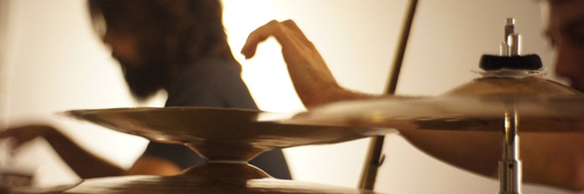
DISCOGRAPHY
EBDP understands improvisation as experimentation, and experimentation as improvisation. There are no previous essays on which one then works to create "works"; EBDP is interested in the process itself, in experimentation itself. Under the slogans "Nothing is superfluous" and "No error", EBDP has tried to record and share all its experiments, taking rehearsals as recording sessions, and recording sessions and live performances as true experimental rehearsals. That's why the EBDP record collection is now close to the 60 albums, which you can access for free through Jamendo:
VIDEOGRAPHY
And since the scenic and performative dimension of music is crucial in EBDP's work, you can also access several videos with samples of performances and a few documentary essays:
CONTACT
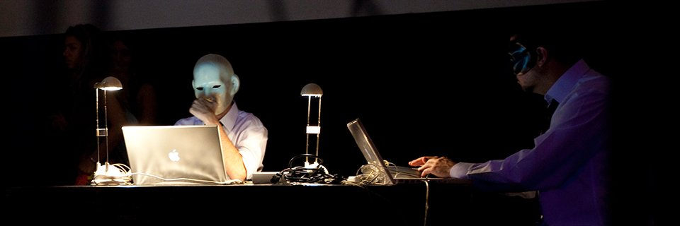
enbuscadelpasto@gmail.com
(+34) 650 056 106 (Jorge)
GRASS BETWEEN COBBLESTONES
Essay-documentary on free improvisation in Madrid (2021)
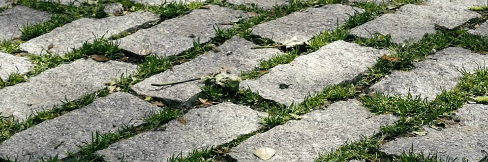
Free improvisation is perhaps the most experimental and avant-garde genre of contemporary music, and for this reason it is also the great unknown (despite having existed for decades in Europe, North America or Japan, and certainly today it is represented in a multitude of countries around the world). Since it starts from a principle of "free creativity", this genre is tremendously diverse, with no aesthetic or formal limits, open to the use of all kinds of instruments or objects, open to mix with other disciplines (such as dance, performance, video-art or poetry...), and, above all, this is a genre where each musician explores their own language and personality, integrating their own references and experiences and making them dialogue with other musicians.
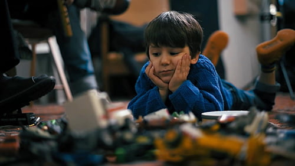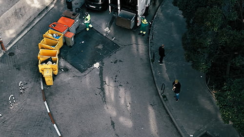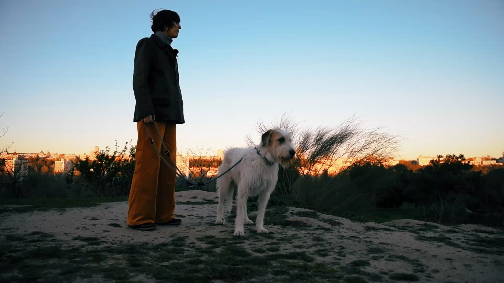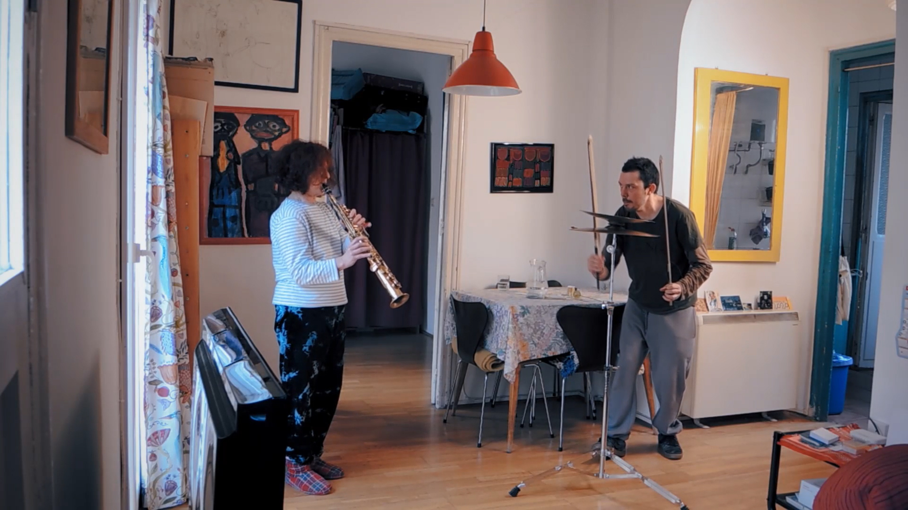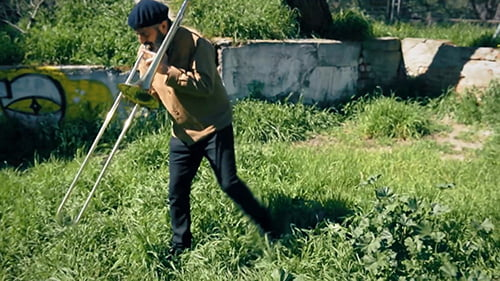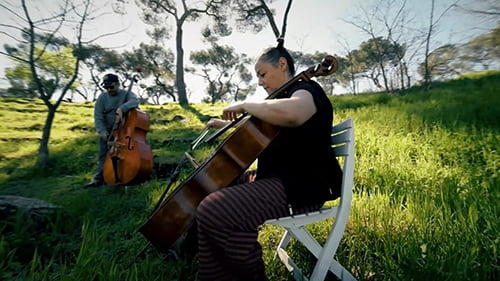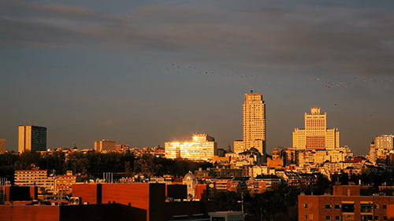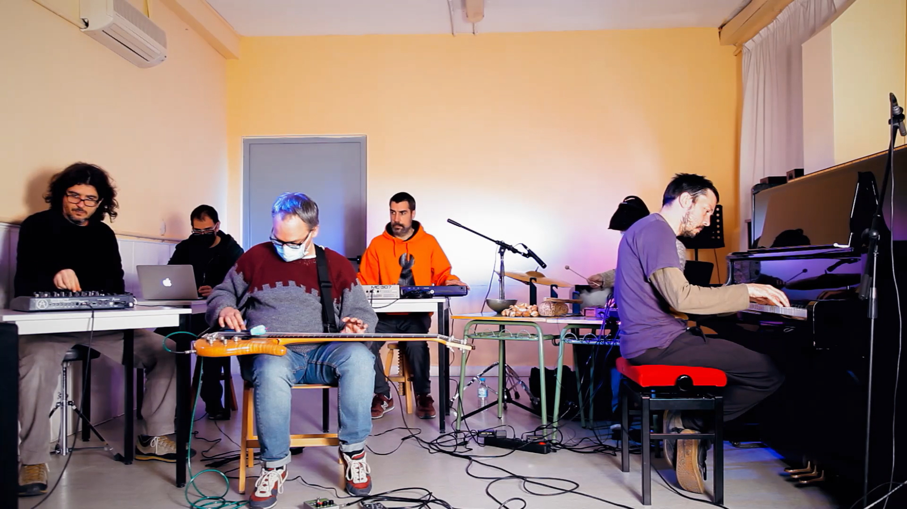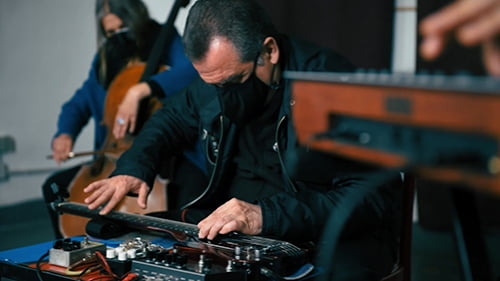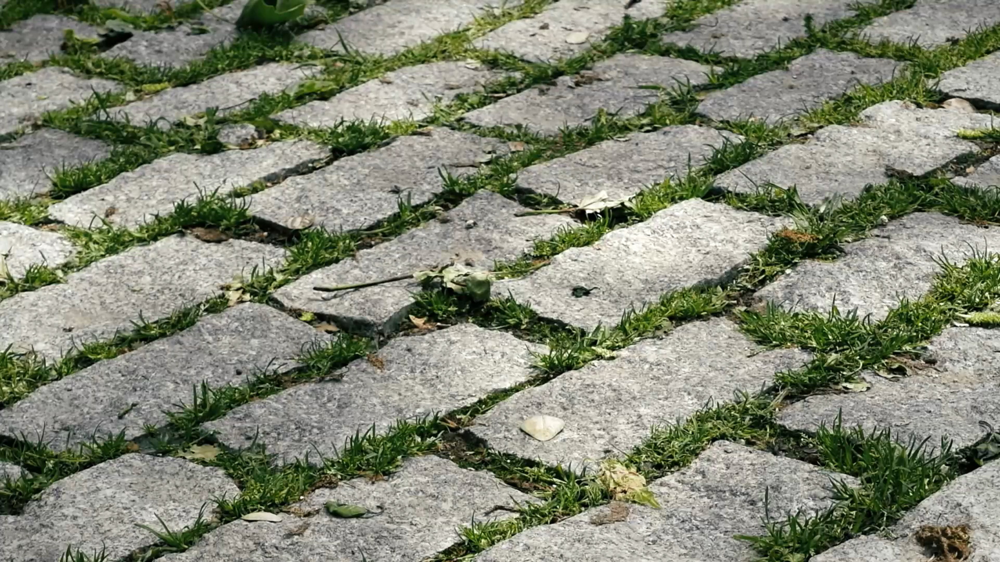
Planned and led by En Busca Del Pasto, this film, made as an essay-documentary, shows this diversity through around thirty free improvisers based in Madrid, exploring the backbone of this peculiar practice: spontaneity, risk and experimentation; resistance and tolerance; openness, dialogue and solidarity among black sheep. A music that oscillates between aesthetic reflection, political stance and playful and therapeutic dispersion. Between the strange, the delicate and the wild. A practice on the fringes of official circuits and markets, but very lively, very open, very free, like the grass growing between the cobblestones. A film about music and life.
Route
· Nov/21 · Semifinalist at Toronto Independent Festival of CIFT.
· Nov/21 · Nominated for Best Documentary at Rome Independent Prisma Awards.
· Jan/22 · Official Selection at the Best Documentary Award (London).
· Feb/22 · Official Selection at the International Documentary Film Awards (Amsterdam).
· Mar/22 · Official Selection at the International World Film Awards (New York).
· May/22 · Semifinalist at the New Filmmakers New Orleans.
· May/22 · Nominated for Best Documentary at the Portland New Alternative Voices.
· Sep/22 · Semifinalist in the Kansas Arthouse Music and Film Festival.
· Nov/22 · Official selection at the XVIII Transterritorial Underground Film Festival (Buenos Aires).
· Nov/22 · Semifinalist at the Prague Underground FIlm Fest.
- Nov/22 - Semifinalist at the Prage Underground FIlm Fest.
Credits
En Busca Del Pasto:
Diego Agulló, Jorge Ruiz, Juan Morales, Pablo Delgado de Torres, Pedro Pons, Ricardo Sanz and Roberto Rodrigo.
With (Music / Performance / Voices:
Alba Morín, Antonia Funes, Aramo Olaya, Carlos Costa, Cecilia Gala, Chefa Alonso, Chema Chacón, Ciro Pons, David Area, Diana Bonilla, Diego Perinetti, Duna, Elias Riviere, Elsa Mateu, Ernesto Novales, Gregorio Kazaroff, Héctor Roma, Isabel Corullón, Ivor R. Tamplin, Javier Entonado, Jorge Cabadas, Julián Elvira, Luis Soler, Melisa Medina, "Melón" Jiménez, Paloma Carrasco, Ricardo Tejero, Tomás Gris, Víctor Sequí, Wade Matthews.
And the members of the Improvisation Orchestra FARMACIA 13:
África Clua, Ana Cuenca, Berta Miranda, Christian Fernández, Eva Frey, Flor Guerin, Francisco Cabeza de Vaca, Héctor Roma, María Prado, Miguel Ángel Barreto and Chefa Alonso (dirección).
Production: Jorge Ruiz Abánades
Production assistants: Diego Agulló and Juan Morales
Photography: Luis Acaraz
Camara operators: Luis Alcaraz and Jorge Ruiz Abánades
Archive images of En Busca Del Pasto: En Busca Del Pasto
Archive images of Música Libre and Raras Músicas: Gregorio Kazaroff and Marina Paradela
Images from Pixabay.com: Roberto D'Amico
Images from Pexels.com Alex Fu, Cottonbro, Egor Kunovsky, Kelly Lacy, Kindel Media and Ni Pen
Films quoted: "Indiana Jones, En Busca Del Parca Perdida", Steven Spielberg (1981) and "La infancia de Iván", Adrei Tarkovsky (1962)
Sound: Valdelamor
Recording final session (Aula de Músicas): Roberto Rodrigo
Sound Technician at Ágora Sol Radio: César Pradíes
Edition: Jorge Ruiz Abánades
Color and DCP Master Adrián Aragonés
Concept and script: Diego Agulló and Jorge Ruiz Abánades
Assistant Director: Diego Agulló
Direction: Jorge Ruiz Abánades
---
Acknowledgements:
Ana Fernández-Cid, Ana Mallo, Antonio Sánchez, Arsenio Ruiz, Cota, Edward Readman, Esther Martínez, Eugenio Tardón, Isa, Jaime Espinosa, José Juarros, Juancar Castillo, Juan López Ciudad, Juan Serrano, Kikoto, Laureao Padrón,Natalia Rodríguez García, Santiago Sánchez and Sonia Noya.
---
Project carried out with the support of the Madrid City Council's programme of aid for creation and mobility (2019).